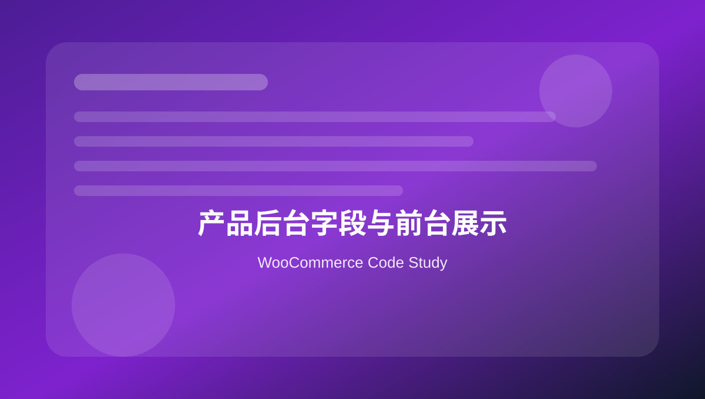

05 产品后台字段与前台展示
整理产品编辑页自定义字段、保存字段、产品数据 Tab、前台展示和后台列。

本页关键词
product meta
woocommerce_product_options_general_product_data
process_product_meta
product tabs
admin columns
学习目标
- 会给产品后台添加字段
- 会保存产品字段
- 会在前台展示字段
- 会添加产品详情 Tab
- 会优化后台产品列表列
代码使用提醒
本页代码用于学习和研究。复制到正式 WooCommerce 网站前，请先备份，并优先在测试环境验证。
凡是影响价格、库存、支付、订单、邮件和客户数据的代码，都需要完整测试购物车、结账、付款、退款、邮件和后台订单处理流程。
1. 在产品常规区域添加字段
基础 · php
<?php
function mywoo_add_product_lead_time_field() {
woocommerce_wp_text_input( array(
'id' => '_lead_time',
'label' => 'Lead Time',
'placeholder' => '2-3 weeks',
'desc_tip' => true,
'description' => 'Estimated production or shipping lead time.',
) );
}
add_action( 'woocommerce_product_options_general_product_data', 'mywoo_add_product_lead_time_field' );
woocommerce_wp_text_input 是 WooCommerce 后台字段辅助函数。
2. 保存产品自定义字段
基础 · php
<?php
function mywoo_save_product_lead_time( $post_id ) {
$lead_time = isset( $_POST['_lead_time'] ) ? sanitize_text_field( wp_unslash( $_POST['_lead_time'] ) ) : '';
$product = wc_get_product( $post_id );
$product->update_meta_data( '_lead_time', $lead_time );
$product->save();
}
add_action( 'woocommerce_process_product_meta', 'mywoo_save_product_lead_time' );
保存时用产品对象 update_meta_data，更利于 CRUD 兼容。
3. 前台单产品页展示字段
实用 · php
<?php
function mywoo_show_lead_time_on_product() {
global $product;
if ( ! $product instanceof WC_Product ) {
return;
}
$lead_time = $product->get_meta( '_lead_time' );
if ( $lead_time ) {
echo '<p class="lead-time"><strong>Lead Time:</strong> ' . esc_html( $lead_time ) . '</p>';
}
}
add_action( 'woocommerce_single_product_summary', 'mywoo_show_lead_time_on_product', 25 );
前台输出字段时必须 escape。
4. 添加产品详情 Tab
实用 · php
<?php
function mywoo_add_product_custom_tab( $tabs ) {
$tabs['technical_specs'] = array(
'title' => 'Technical Specs',
'priority' => 40,
'callback' => 'mywoo_product_specs_tab_content',
);
return $tabs;
}
add_filter( 'woocommerce_product_tabs', 'mywoo_add_product_custom_tab' );
function mywoo_product_specs_tab_content() {
global $product;
echo '<h2>Technical Specifications</h2>';
echo wp_kses_post( wpautop( $product->get_meta( '_technical_specs' ) ) );
}
产品 Tab 适合放规格、安装说明、质保等内容。
5. 后台产品列表增加 Lead Time 列
后台 · php
<?php
function mywoo_product_admin_columns( $columns ) {
$columns['lead_time'] = 'Lead Time';
return $columns;
}
add_filter( 'manage_edit-product_columns', 'mywoo_product_admin_columns' );
function mywoo_product_admin_column_content( $column, $post_id ) {
if ( 'lead_time' === $column ) {
$product = wc_get_product( $post_id );
echo esc_html( $product ? $product->get_meta( '_lead_time' ) : '' );
}
}
add_action( 'manage_product_posts_custom_column', 'mywoo_product_admin_column_content', 10, 2 );
后台列能提升维护效率。
6. 给产品字段加权限判断
安全 · php
<?php
function mywoo_can_edit_product_extra_fields() {
return current_user_can( 'edit_products' ) || current_user_can( 'manage_woocommerce' );
}
if ( mywoo_can_edit_product_extra_fields() ) {
// 执行保存或显示敏感字段逻辑。
}
产品后台自定义保存逻辑要注意权限。
本页总结
产品自定义字段是 WooCommerce 二次开发高频场景。后台字段、保存、前台展示、Tab 和列表列是一套完整流程。